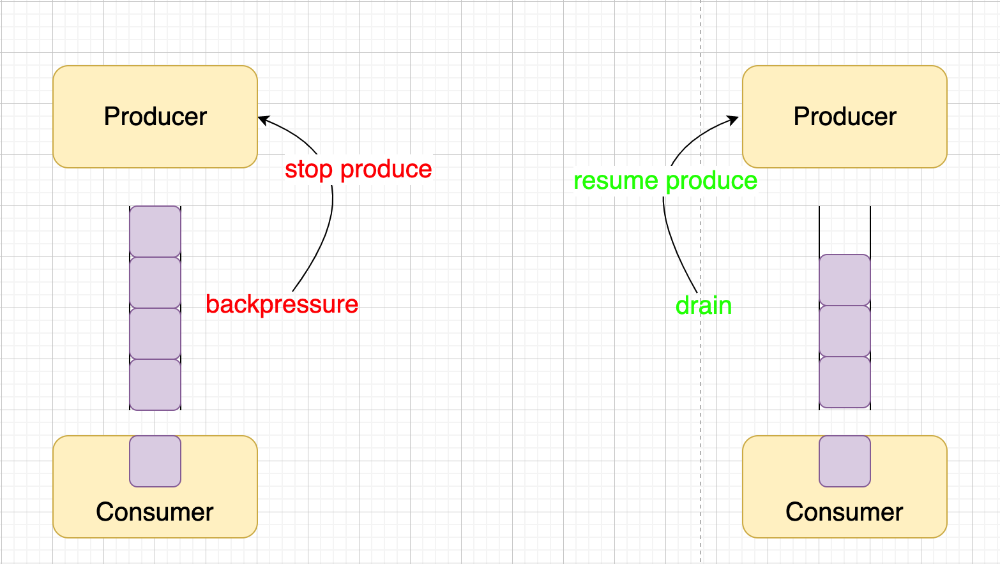

Writable stream - Node.js
Writable stream 是对被写入数据的目的地的抽象，用于输出数据到底层 I/O。Writable stream 十分简洁，仅对外暴露一个基本方法 write(chunk)。
Node.js 的 Writable stream 具有内部的缓冲区。

Writable stream 是一个消费 FIFO 中数据的进程，并且它还具有通知生产者和消费者的机制 — 缓冲区溢出和缓冲区未满。
- 当 Writable stream 创建后，它会处于空闲状态
- 当一个数据块添加到队列后，就会调用内部的抽象方法
_write()并重新执行写进程 - 并且一旦
_write()方法的回调被调用，就表示数据块被消费了 - 上述过程会一直循环，直到没有数据可以消费
highWaterMark
通过 highWaterMark 可以指定缓冲区的大小。
write()
当我们手动调用 write(chunk) 方法将块写入 Writable stream 时，write() 方法会返回有关内部缓冲区状态的提示：
true内部的缓冲区仍有可用空间，表示可以继续写入false内部的缓冲区已满，将要背压。此时应该立即停止向流写入数据，直到drain事件被触发
当流还未被排空时（writable._write() 被调用之后且 cb 被调用之前），虽然也可以调用 write()，Node.js 会缓冲所有被写入的数据块，直到达到最大内存占用而无条件中止。
在它中止之前，高内存占用将会导致垃圾回收器的性能变差和 RSS 变高（即使内存不再需要，通常也不会被释放回系统）。
1 | function write(data, cb) { |